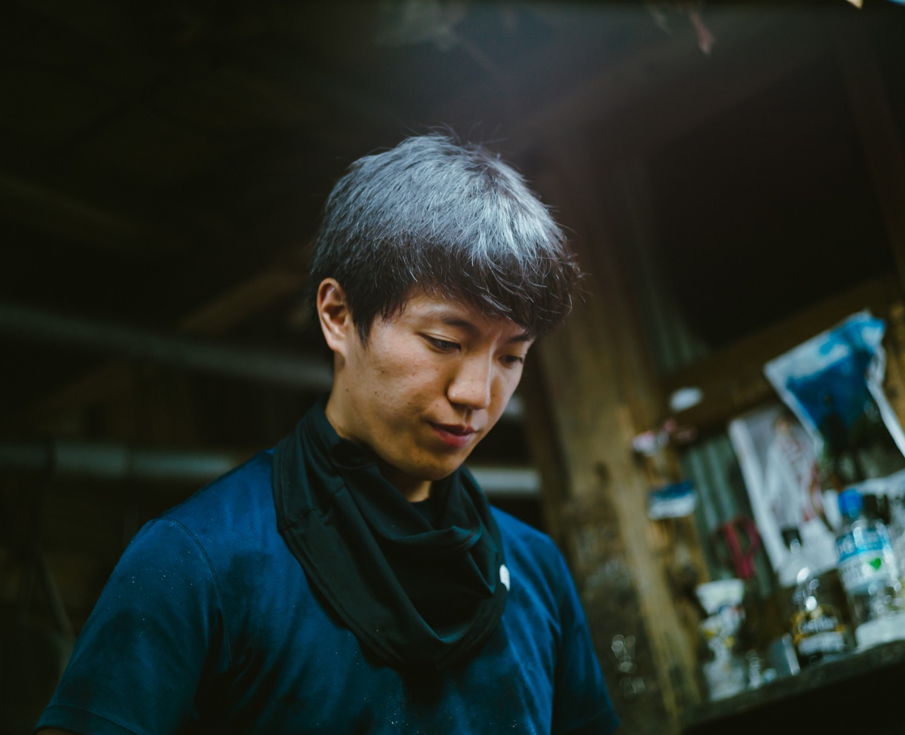

About
私たちについて
About
SCROLL
日本橋で百二十年以上。
注染という技法を受け継ぎながら、
今の暮らしに寄り添う布をつくっています。
Over 120 years in Nihonbashi.
Carrying forward the craft of chusen dyeing,
we make textiles that belong to everyday life today.

ものづくりへの考え方
Our Approach
注染は、型紙と糊と染料だけで布に色を与える技法です。機械では出せない、にじみと濃淡が生まれます。
丸久はその工程を、染め場の職人とともに守り続けています。
Chusen uses stencils, paste, and dye to color fabric — creating a depth and softness that no machine can replicate.
At Marukyu, we protect this process alongside the craftspeople who practice it.

代表について
Representative
五代目として丸久商店を受け継ぎ、
注染の仕事を今の暮らしへつなげています。
As the fifth-generation owner of Marukyu Shoten,
I carry the craft of chusen into everyday life today.
歩み
History
- 1899
- 東京・日本橋堀留町に創業
- Founded in Horidomecho, Nihonbashi, Tokyo
- 1960s
- 注染浴衣・手拭の問屋として拡大
- Expanded as a wholesaler of chusen yukata and tenugui
- 2000s
- 現代ブランド・デザイナーとのコラボレーション開始
- Began collaborations with contemporary brands and designers
- Now
- OEM・オリジナル製作・ECを展開
- OEM production, original works, and online retail
会社概要
Company Info
- Name
- 有限会社丸久商店
- Marukyu Shoten Co., Ltd.
- Address
- 〒103-0012 東京都中央区日本橋堀留町一丁目４番１号 1-4-1 Horidomecho, Nihonbashi, Chuo-ku, Tokyo
- info@shinedozome.com
- Tel
- 03-3663-0939
- Fax
- 03-3663-0909
- Hours
- 9:00–17:00（土日祝休）9:00–17:00 (Closed Sat, Sun & Holidays)